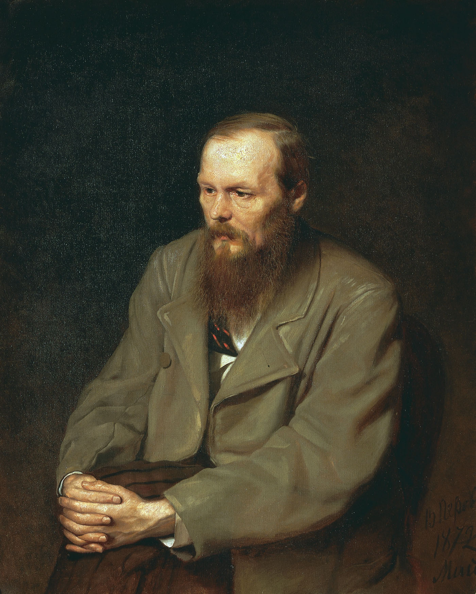
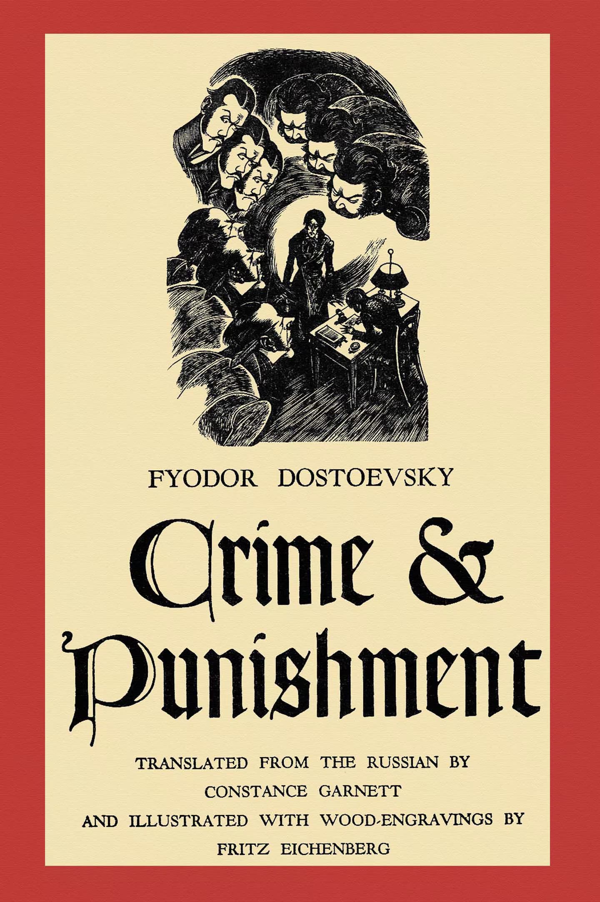
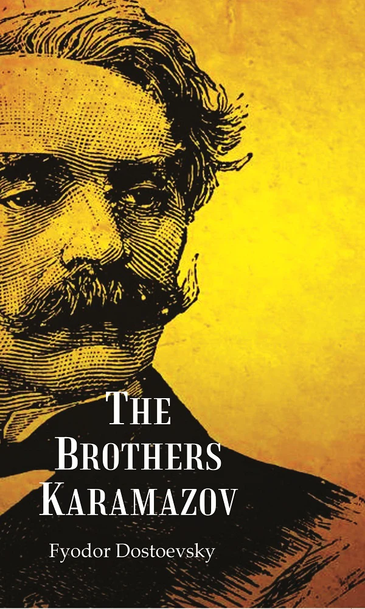
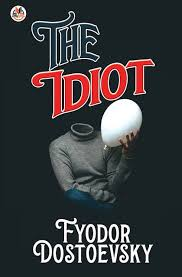
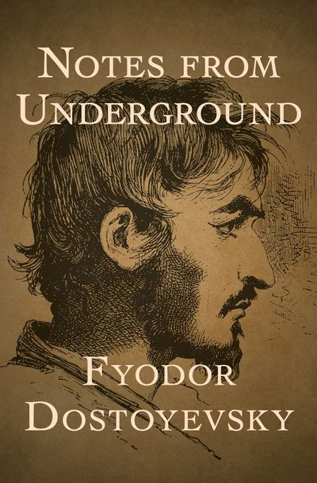

Explore the deep psychological and philosophical insights of Fyodor Dostoevsky through his greatest novels.


Crime and Punishment
Delves into guilt, morality, and redemption through the troubled mind of Raskolnikov.

The Brothers Karamazov
A grand exploration of free will, God, and moral responsibility across generations.

The Idiot
Prince Myshkin embodies pure goodness in a cynical world — but can purity survive reality?

Notes from Underground
The monologue of an isolated anti-hero who confronts reason, freedom, and self-destruction.
“Man is a mystery. It needs to be unraveled, and if you spend your whole life unraveling it, don't say that you've wasted time. I am studying that mystery because I want to be a human being.”
Dive into the complex inner world of Dostoevsky. Join our reading circle or explore free resources below.